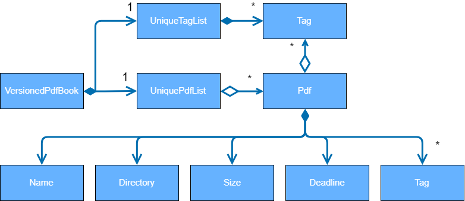

By: Team T12-4 Since: Feb 2019 Licence: MIT
- 1. Setting up
- 2. Design
- 3. Implementation
- 3.1. Adding of files to application
- 3.2. Open feature
- 3.3. Edit feature
- 3.4. Move feature
- 3.5. Merge feature
- 3.6. Delete feature
- 3.7. Clear feature
- 3.8. Deadline feature
- 3.9. Help feature
- 3.10. Exit feature
- 3.11. List feature
- 3.12. Find feature
- 3.13. Filter feature
- 3.14. Select feature
- 3.15. Sort feature
- 3.16. Tag feature
- 3.17. History feature
- 3.18. Undo/Redo feature
- 3.19. File Protection
- 3.20. Logging
- 3.21. Configuration
- 4. Documentation
- 5. Testing
- 6. Dev Ops
- Appendix A: Suggested Programming Tasks to Get Started
- Appendix B: Product Scope
- Appendix C: User Stories
- Appendix D: Use Cases
- Appendix E: Non Functional Requirements
- Appendix F: Glossary
- Appendix G: Instructions for Manual Testing
1. Setting up
1.1. Prerequisites
-
JDK
9or laterJDK 10on Windows will fail to run tests in headless mode due to a JavaFX bug. Windows developers are highly recommended to use JDK9. -
IntelliJ IDE
IntelliJ by default has Gradle and JavaFx plugins installed.
Do not disable them. If you have disabled them, go toFile>Settings>Pluginsto re-enable them.
1.2. Setting up the project in your computer
-
Fork this repo, and clone the fork to your computer
-
Open IntelliJ (if you are not in the welcome screen, click
File>Close Projectto close the existing project dialog first) -
Set up the correct JDK version for Gradle
-
Click
Configure>Project Defaults>Project Structure -
Click
New…and find the directory of the JDK
-
-
Click
Import Project -
Locate the
build.gradlefile and select it. ClickOK -
Click
Open as Project -
Click
OKto accept the default settings -
Open a console and run the command
gradlew processResources(Mac/Linux:./gradlew processResources). It should finish with theBUILD SUCCESSFULmessage.
This will generate all resources required by the application and tests. -
Open
MainWindow.javaand check for any code errors-
Due to an ongoing issue with some of the newer versions of IntelliJ, code errors may be detected even if the project can be built and run successfully
-
To resolve this, place your cursor over any of the code section highlighted in red. Press ALT+ENTER, and select
Add '--add-modules=…' to module compiler optionsfor each error
-
-
Repeat this for the test folder as well (e.g. check
HelpWindowTest.javafor code errors, and if so, resolve it the same way)
1.3. Verifying the setup
-
Run the
seedu.pdf.MainAppand try a few commands -
Run the tests to ensure they all pass.
1.4. Configurations to do before writing code
1.4.1. Configuring the coding style
This project follows oss-generic coding standards. IntelliJ’s default style is mostly compliant with ours but it uses a different import order from ours. To rectify,
-
Go to
File>Settings…(Windows/Linux), orIntelliJ IDEA>Preferences…(macOS) -
Select
Editor>Code Style>Java -
Click on the
Importstab to set the order-
For
Class count to use import with '*'andNames count to use static import with '*': Set to999to prevent IntelliJ from contracting the import statements -
For
Import Layout: The order isimport static all other imports,import java.*,import javax.*,import org.*,import com.*,import all other imports. Add a<blank line>between eachimport
-
Optionally, you can follow the UsingCheckstyle.adoc document to configure Intellij to check style-compliance as you write code.
1.4.2. Updating documentation to match your fork
After forking the repo, the documentation will still have the SE-EDU branding and refer to the se-edu/addressbook-level4 repo.
If you plan to develop this fork as a separate product (i.e. instead of contributing to se-edu/addressbook-level4), you should do the following:
-
Configure the site-wide documentation settings in
build.gradle, such as thesite-name, to suit your own project. -
Replace the URL in the attribute
repoURLinDeveloperGuide.adocandUserGuide.adocwith the URL of your fork.
1.4.3. Setting up CI
Set up Travis to perform Continuous Integration (CI) for your fork. See UsingTravis.adoc to learn how to set it up.
After setting up Travis, you can optionally set up coverage reporting for your team fork (see UsingCoveralls.adoc).
| Coverage reporting could be useful for a team repository that hosts the final version but it is not that useful for your personal fork. |
Optionally, you can set up AppVeyor as a second CI (see UsingAppVeyor.adoc).
| Having both Travis and AppVeyor ensures your App works on both Unix-based platforms and Windows-based platforms (Travis is Unix-based and AppVeyor is Windows-based) |
1.4.4. Getting started with coding
When you are ready to start coding,
-
Get some sense of the overall design by reading Section 2.1, “Architecture”.
-
Take a look at Appendix A, Suggested Programming Tasks to Get Started.
2. Design
2.1. Architecture
The Architecture Diagram given above explains the high-level design of the App. Given below is a quick overview of each component.
The .pptx or .xml files used to create diagrams in this document can be found in the diagrams folder. To update a diagram, modify the diagram in the pptx or xml file, select the objects of the diagram, and choose Save as picture.
|
Main has only one class called MainApp. It is responsible for,
-
At app launch: Initializes the components in the correct sequence, and connects them up with each other.
-
At shut down: Shuts down the components and invokes cleanup method where necessary.
Commons represents a collection of classes used by multiple other components.
The following class plays an important role at the architecture level:
-
LogsCenter: Used by many classes to write log messages to the App’s log file.
The rest of the App consists of four components.
Each of the four components
-
Defines its API in an
interfacewith the same name as the Component. -
Exposes its functionality using a
{Component Name}Managerclass.
For example, the Logic component (see the class diagram given below) defines it’s API in the Logic.java interface and exposes its functionality using the LogicManager.java class.

How the architecture components interact with each other
The Sequence Diagram below shows how the components interact with each other for the scenario where the user issues the command delete 1.
delete 1 commandThe sections below give more details of each component.
2.2. UI component
API : Ui.java
The UI consists of a MainWindow that is made up of parts e.g.CommandBox, ResultDisplay, PdfListPanel, StatusBarFooter, BrowserPanel etc. All these, including the MainWindow, inherit from the abstract UiPart class.
The UI component uses JavaFx UI framework. The layout of these UI parts are defined in matching .fxml files that are in the src/main/resources/view folder. For example, the layout of the MainWindow is specified in MainWindow.fxml
The UI component,
-
Executes user commands using the
Logiccomponent. -
Listens for changes to
Modeldata so that the UI can be updated with the modified data.
2.3. Logic component
API :
Logic.java
-
Logicuses thePdfBookParserclass to parse the user command. -
This results in a
Commandobject which is executed by theLogicManager. -
The command execution can affect the
Model(e.g. adding a pdf). -
The result of the command execution is encapsulated as a
CommandResultobject which is passed back to theUi. -
In addition, the
CommandResultobject can also instruct theUito perform certain actions, such as displaying help to the user.
Given below is the Sequence Diagram for interactions within the Logic component for the execute("delete 1") API call.

delete 1 Command2.4. Model component

API : Model.java
The Model,
-
stores a
UserPrefobject that represents the user’s preferences. -
stores the Pdf Book data.
-
exposes an unmodifiable
ObservableList<Pdf>that can be 'observed' e.g. the UI can be bound to this list so that the UI automatically updates when the data in the list change. -
does not depend on any of the other three components.
As a more OOP model, we can store a Tag list in Pdf Book, which Pdf can reference. This would allow Pdf Book to only require one Tag object per unique Tag, instead of each Pdf needing their own Tag object. An example of how such a model may look like is given below. |
2.5. Storage component
API : Storage.java
The Storage component,
-
can save
UserPrefobjects in json format and read it back. -
can save the Pdf Book data in json format and read it back.
2.6. Common classes
Classes used by multiple components are in the seedu.pdfbook.commons package.
3. Implementation
This section describes some noteworthy details on how certain features are implemented.
-
Items with
… after them can be used multiple times including zero times e.g.TAG…can be used asMyTag,TagA TagB TagCetc.
3.1. Adding of files to application
3.1.1. Current Implementation
This feature is facilitated by both the AddCommandParser and AddCommand. This feature adds the PDF file to the app using the path specified by your users. Other features such as the Section 3.3, “Edit feature” and Section 3.2, “Open feature” can only be performed on files that are added to the application.
The AddCommandParser uses the prefixes defined in CliSyntax to identify the different types of arguments that are entered along with the
add command. These arguments will then be used to construct a new Pdf which will represent the Pdf to be added.
The implementation of the AddCommand execution can be summarised in the following activity diagram:
-
The current PdfBook Model is checked to determine if identical Pdf has already been added.
-
If such a Pdf already exists, a CommandException will be thrown and the execution will be ended.
-
-
The Pdf to be added is loaded as to check for errors.
-
Pdf will be loaded as PDDocument, which is an indicator if the application can perform other operations on the Pdf that need it to be handled as a
.pdffile. -
Created PDDocument will be closed after loading as it is unused.
-
Errors in accessing Pdf would throw IOException. Errors would most likely be due to:
-
File not found at location
-
Lack of user permissions to open file
-
File has encryption
-
File corruption
-
-
Thrown IOException is intercepted, a CommandException will be thrown and the execution will be ended.
-
-
The Pdf is recorded in the Model and the changes are committed.
-
CommandResult is returned upon successful execution.
3.1.2. Considerations
The implementation design of this feature was built upon the original implementation used by the addressbook. As the application is primarily meant to be operated through the CLI, it was decided to continue using the same prefix for the command input to keep its consistency.
Due to handling of files, additional checks have to be added such as the use of
PDDocument
to ascertain that it is a .pdf file and that it can be used with Apache PDFBox® library API.
3.1.3. Future Implementation
Currently PDF++ only supports PDF files, any other types of files will not be accepted. As the goal of the application is to be the sole manager of files, the application will be upgraded to work with all files in v2.0.
3.2. Open feature
3.2.1. Current Implementation
The open feature is facilitated by both the OpenCommandParser and OpenCommand.
Essentially upon opening a Pdf that is tracked by the application, the user will be able to
execute the PDF with the operating system’s default PDF reader application.
The Open feature has the following syntax:
open <INDEX>
-
<INDEX>refers to the index of thePdfthat you wish to edit.
The index value can be referenced from the list in the main application, or from the
result of the Filter, Find or List feature.
|
3.2.2. Feature Breakdown
Illustrated below is a sample usage scenario that provides a clear view to the inner workings of the Open feature.
Step 1: The user launches an application with either an existing set of Pdf or a
new sample set of Pdf stored within as shown below.
Step 2: The user chooses a Pdf that they wish to open, in this case a.pdf, and
enters the open command into the CLI Interface, following the outlined Syntax as
illustrated below.
Step 3: Upon hitting enter to execute the command, the OpenCommandParser parses the input into relevant objects that are required to be executed by the OpenCommand object. Upon parsing, the parser then creates a new OpenCommand that will execute the user’s input.
Step 4: Upon receiving the necessary information from the parser, the OpenCommand retrieves the directory of the Pdf listed in the Pdf Book. It then launches the Pdf with the user-default Pdf reader.

| For more information about the behavior of launching the Pdf, please refer to Java SE 9 class Desktop. |
3.3. Edit feature
3.3.1. Current Implementation
The edit feature is facilitated by both the EditCommandParser and EditCommand.
Essentially upon adding a Pdf to be tracked by the application, the user will be able to
change certain attributes tied to the PDF such as the Name and Tag tied to a particular Pdf.

3.4. Move feature
3.4.1. Current Implementation
The move feature is facilitated by both MoveCommand and MoveCommandParser.
This feature functions as a simplified version of Section 3.3, “Edit feature”, as in nature
it is making an edit to the directory of the file. However, in addition to making changes
to the directory in the application storage, it also ensures that the directory changes
are reflected in the local filesystem.
The design consideration into separating move as a new command from edit factored in the purpose of the application; as a document manager, the term "edit" is synonymous with making content or characteristic changes when it is applied in the context of documents.
The Move feature has the following syntax:
move
move <INDEX> <NEWDIRECTORY>
-
<INDEX>refers to the index of the file that you wish to move. -
<NEWDIRECTORY>refers to the address of the new location the file is to be moved. -
Entering
movewithout<INDEX>or<NEWDIRECTORY>will open the default file selection GUI for the user to select the file directly.
The index value can be referenced from the list in the main application, or from the
result of the Filter, Find or List feature.
|
All parts of the syntax are required.
3.4.2. Feature breakdown
Illustrated below is a sample usage scenario that provides a clear view to the inner
workings of the move feature.
Step 1: From the main interface of the application, the user chooses a Pdf that
they wish to move, and enters the move command into the CLI Interface, following
the outlined Syntax as illustrated below.

In this scenario, there is a file document.pdf in the windows Desktop directory, and
the move command entered is intended for the file to be moved to the windows Documents
directory.
Step 2: After executing the command, the MoveCommandParser parses the input into
relevant objects that are required to be executed by the MoveCommand object. In
particular, it ensures that there are correctly two arguments passed as described in the
above Syntax. Upon parsing, the parser then creates a new MoveCommand that will execute
the user’s input.
Step 3: The MoveCommand is then executed. Successful execution of the command would return
a CommandResult object, while unsuccessful execution due to validation failure will throw
a CommandException.

3.5. Merge feature
3.5.1. Current Implementation
The merge feature is facilitated by both MergeCommand and MergeCommandParser.
This feature utilises the
Apache PDFBox® library, specifically the
PDFMergerUtility
API to append two or more PDFs and create a new file with the merged content. As there will be one
additional file added to the application, this feature also implicitly performs an Add feature to add the new
PDF to the application.
The Merge feature has the following syntax:
merge <INDEX1> <INDEX2> …
-
<INDEX>refers to the index of thePdfthat you wish to merge. -
Minimum of two indices have to be provided for the merge to be performed, up to as many indices as desired.
-
It is possible to repeat an index; the PDF would simply merge with a copy of itself.
The index value can be referenced from the list in the main application, or from the
result of the Filter, Find or List feature.
|
3.5.2. Feature breakdown
Illustrated below is a sample usage scenario that provides a clear view to the inner
workings of the merge feature.
Step 1: From the main interface of the application, the user chooses the file(s) that
they wish to merge, and enters the merge command into the CLI Interface, following
the outlined Syntax as illustrated below.

Step 2: After executing the command, the MergeCommandParser parses the input into relevant objects that are required to be executed by the MergeCommand object. In particular, it ensures that there are two or more arguments passed as described in the above Syntax. Upon parsing, the parser then creates a new MergeCommand that will execute the user’s input.
In this case, the above two files will be merged, with the "CS2103T_PDF++_UG_Intro.pdf" file appended behind the other file.
Step 3: The MergeCommand is then executed. During the execution, there are several levels of validation that, failing which would stop the execution and throw an exception. Here are the different cases:
| In these cases, all exceptions encountered will be handled as a CommandException. This design consideration was made to add convenience to error handling. |
-
One or more of the indices provided are invalid i.e. the index is negative or does not reference any of the Pdfs listed. A ParseException is thrown.
-
When loading the PDDocument of the file, the file cannot be accessed for various reasons:-
-
If the document cannot be found, a FileNotFoundException is thrown.
-
If the document is encrypted, an InvalidPasswordException is thrown.
-
If the document cannot be opened for any other reason, an IOException is thrown.
-
-
When any of the files to the fail to be added to the PDFMergerUtility, an IOException is thrown.
-
After merging the files, if any of the PDDocuments are unable to be closed, an IOException is thrown.
Step 4: Successful execution of the command would return a CommandResult object and create the a new file with the merged content. The new name of the merged file follows the format: "merged[hashcode].pdf". This is to ensure unique file name. The hashcode in the name will be modified if name already exists.
The following Activity Diagram is a summary of the entire execution process.

3.6. Delete feature
3.6.1. Current Implementation
The delete feature is facilitated by both DeleteCommand and DeleteCommandParser.
This feature performs either a soft or hard remove operation on a file in the application
based on the index provided.
-
Soft delete is defined as removing a file from the application but not from the local filesystem; the physical file is left intact within the user’s operating system, but the user will not be able to access or use the features of the application on said file - unless it is added back to the application.
-
Hard delete is defined as removing a file both from the application and the local filesystem; the physical file will be deleted and the user will not be able to access or perform any operations on the file, either through the application or through the user’s operating system.
| As of v1.4 there is no way to completely undo the hard delete operation. When the file is deleted from the filesystem, it is permanently erased. Even the Section 3.18, “Undo/Redo feature” cannot help with this… |
The delete feature has the following syntax:
delete <INDEX>
delete <INDEX> hard
-
<INDEX>refers to the index of the file in the list that you wish to perform theactionon. -
If the keyword
hardis not specified, the soft delete operation will be performed. Otherwise, the hard delete operation will be performed.
The index value can be referenced from the list in the main application, or from the
result of the Filter, Find or List feature.
|
3.6.2. Feature breakdown
Illustrated below is a sample usage scenario that provides a clear view to the inner
workings of the delete feature.
Step 1: From the main interface, the user chooses a file that they wish to delete, and
enters the delete command into the CLI Interface, following the outlined Syntax mentioned.
Step 2: Upon hitting enter to execute the command, the DeleteCommandParser parses the input into relevant objects that are required to be executed by the DeleteCommand object. Upon parsing, the parser then creates a new DeleteCommand that will execute the user’s input.
Step 3: The DeleteCommand is then executed. Successful execution will return a CommandResult indicating that the deadline has been set.
3.7. Clear feature
3.7.1. Current Implementation
The clear feature is facilitated by both ClearCommand and ClearCommandParser.
This features removes all the PDF files that were previously stored in PDF++. It is similar to
the Section 3.6, “Delete feature” in that it removes files from the application, with multiple files instead of
one at a time. However, it differs that it does not have the option to delete the file from the local
filesystem.
The Clear feature has to following syntax:
clear
-
The
clearcommand will be executed regardless if there is any invalid text that comes after the command -
All files will be removed from the application, but not from the local filesystem.
Since the clear feature is very easily executed, if you have accidentally entered the clear command and
wish to revert the action, please refer to Section 3.18, “Undo/Redo feature” for more information.
|
3.8. Deadline feature
3.8.1. Current Implementation
The deadline feature is facilitated by both DeadlineCommand and DeadlineCommandParser
This feature allows you to set or remove deadlines of the file specified by you from PDF++.
The deadlines will be recorded and displayed both in the list of files as well as in the information panel
for each individual file.
The deadline feature has the following syntax:
deadline <INDEX> <ACTION>
-
<INDEX>refers to the index of the file in the list that you wish to perform theactionon. -
<ACTION>refers to the type of action that you wish to perform. There are 3 actions that you can perform-
date/<DATE>-
date/refers to command immediately following after this prefix is a date -
<DATE>must be ofdd-mm-yyyyformat (E.g. 15-03-2019)
-
-
doneassigns the file a DONE status -
removeassigns the file a REMOVE status
-
The index value can be referenced from the list in the main application, or from the
result of the Filter, Find or List feature.
|
3.8.2. Feature Breakdown
Illustrated below is a sample usage scenario that provides a clear view to the inner
workings of the deadline feature.
Step 1: From the main interface, the user chooses a file that they wish to set a deadline,
enters the deadline command into the CLI Interface, following the outlined Syntax mentioned.
Step 2: Upon hitting enter to execute the command, the DeadlineCommandParser parses the input into relevant objects that are required to be executed by the DeadlineCommand object. Upon parsing, the parser then creates a new DeadlineCommand that will execute the user’s input.
Step 3: The DeadlineCommand is then executed. Successful execution will return a CommandResult indicating that the deadline has been set.
| After a deadline has been added to the PDF file specified, the date will be color coded according to days remaining from the current day until the deadline date. |
3.9. Help feature
3.9.1. Current Implementation
The help feature brings up the UserGuide in a browser window as a html file. Following other
features, the command is parsed and a HelpCommand object is created to be executed.
The help feature has to following syntax:
help
After execution, the user will be directed to the start of the UserGuide.adoc as shown. Users can reference from the UserGuide directly on how to navigate the guide.

3.10. Exit feature
3.10.1. Current Implementation
The exit feature is facilitated by ExitCommand. This feature allows you to exit from PDF++.
The exit feature has to following syntax:
exit…
-
The
exitcommand will be executed regardless if there is any invalid text that comes after the command
| Your files and commands are immediately stored after execution, and can be retrieved on reopening the application. |
3.11. List feature
3.11.1. Current Implementation
The list feature is facilitated by ListCommand. This feature will display all of the files currently stored within the application at the main interface. By default, all of the files will be displayed when the application is started. However, the display of the interface can be changed to reflect the results of Section 3.12, “Find feature” or Section 3.13, “Filter feature”.
Certain features such as Section 3.5, “Merge feature” rely on the index of the file(s) displayed on
the main interface. Since the find or filter feature would list a sample of all
the files at the main interface, no commands can be executed on the files not included in
the results. Hence, the list feature is added to allow for a "reset" of the view of the files.
|
The List feature has to following syntax:
list
3.12. Find feature
3.12.1. Current Implementation
The find feature is facilitated by FindCommand and FindCommandParser.
This feature lists a subset of all the files in the application based on the keyword(s)
provided. Using the keyword(s), the application will check the names of all files, as
well as the content of the text within the files.
The find feature has to following syntax:
find <KEYWORD> …
-
<KEYWORD>refers to the word that the application will use as reference to find files. There must be at least one provided.
3.13. Filter feature
3.13.1. Current Implementation
The filter feature is facilitated by FilterCommand and FilterCommandParser.
This feature is similar to Section 3.12, “Find feature” in that it lists a subset of all the files
in the application, except that it will list the files based on the tag of the file.
The filter feature has to following syntax:
filter t/<TAG> …
-
<TAG>refers to a tag that is valid, i.e. a tag that was previously set on a file. -
All tags need to have the prefix /t to differentiate between each tag.
3.14. Select feature
3.14.1. Current Implementation
The select feature is facilitated by SelectCommand. Enter functionality here
The Select feature has to following syntax: select
-
Enter here
| Enter note here |
3.15. Sort feature
3.15.1. Current Implementation
The sort feature is facilitated by SortCommand. Enter functionality here
The Sort feature has to following syntax: sort
-
Enter here
| Enter note here |
3.16. Tag feature
3.16.1. Current Implementation
The tag feature is facilitated by TagCommand. Enter functionality here
The Tag feature has to following syntax: tag t/
-
Enter here
| Enter note here |
3.17. History feature
3.17.1. Current Implementation
The history feature is facilitated by HistoryCommand.
This feature displays the previous commands entered since the start of the current session
of the application; each time the application is closed, the command history will be erased.
The history feature has to following syntax:
history
-
When there is no command history, a message will be shown to notify the user.
3.18. Undo/Redo feature
3.18.1. Current Implementation
The undo/redo mechanism is facilitated by VersionedPdfBook.
It extends PdfBook with an undo/redo history, stored internally as an pdfBookStateList and currentStatePointer.
Additionally, it implements the following operations:
-
VersionedPdfBook#commit()— Saves the current pdf book state in its history. -
VersionedPdfBook#undo()— Restores the previous pdf book state from its history. -
VersionedPdfBook#redo()— Restores a previously undone pdf book state from its history.
These operations are exposed in the Model interface as Model#commitPdfBook(), Model#undoPdfBook() and Model#redoPdfBook() respectively.
Given below is an example usage scenario and how the undo/redo mechanism behaves at each step.
Step 1. The user launches the application for the first time. The VersionedPdfBook will be initialized with the initial pdf book state, and the currentStatePointer pointing to that single pdf book state.
Step 2. The user executes delete 5 command to delete the 5th pdf in the pdf book. The delete command calls Model#commitPdfBook(), causing the modified state of the pdf book after the delete 5 command executes to be saved in the pdfBookStateList, and the currentStatePointer is shifted to the newly inserted pdf book state.
Step 3. The user executes add n/David … to add a new pdf. The add command also calls Model#commitPdfBook(), causing another modified pdf book state to be saved into the pdfBookStateList.
If a command fails its execution, it will not call Model#commitPdfBook(), so the pdf book state will not be saved into the pdfBookStateList.
|
Step 4. The user now decides that adding the pdf was a mistake, and decides to undo that action by executing the undo command. The undo command will call Model#undoPdfBook(), which will shift the currentStatePointer once to the left, pointing it to the previous pdf book state, and restores the pdf book to that state.
If the currentStatePointer is at index 0, pointing to the initial pdf book state, then there are no previous pdf book states to restore. The undo command uses Model#canUndoPdfBook() to check if this is the case. If so, it will return an error to the user rather than attempting to perform the undo.
|
The following sequence diagram shows how the undo operation works:

The redo command does the opposite — it calls Model#redoPdfBook(), which shifts the currentStatePointer once to the right, pointing to the previously undone state, and restores the pdf book to that state.
If the currentStatePointer is at index pdfBookStateList.size() - 1, pointing to the latest pdf book state, then there are no undone pdf book states to restore. The redo command uses Model#canRedoPdfBook() to check if this is the case. If so, it will return an error to the user rather than attempting to perform the redo.
|
Step 5. The user then decides to execute the command list. Commands that do not modify the pdf book, such as list, will usually not call Model#commitPdfBook(), Model#undoPdfBook() or Model#redoPdfBook(). Thus, the pdfBookStateList remains unchanged.
Step 6. The user executes clear, which calls Model#commitPdfBook(). Since the currentStatePointer is not pointing at the end of the pdfBookStateList, all pdf book states after the currentStatePointer will be purged. We designed it this way because it no longer makes sense to redo the add n/David … command. This is the behavior that most modern desktop applications follow.
The following activity diagram summarizes what happens when a user executes a new command:
3.18.2. Design Considerations
Aspect: How undo & redo executes
-
Alternative 1 (current choice): Saves the entire pdf book.
-
Pros: Easy to implement.
-
Cons: May have performance issues in terms of memory usage.
-
-
Alternative 2: Individual command knows how to undo/redo by itself.
-
Pros: Will use less memory (e.g. for
delete, just save the pdf being deleted). -
Cons: We must ensure that the implementation of each individual command are correct.
-
Aspect: Data structure to support the undo/redo commands
-
Alternative 1 (current choice): Use a list to store the history of pdf book states.
-
Pros: Easy for new Computer Science student undergraduates to understand, who are likely to be the new incoming developers of our project.
-
Cons: Logic is duplicated twice. For example, when a new command is executed, we must remember to update both
HistoryManagerandVersionedPdfBook.
-
-
Alternative 2: Use
HistoryManagerfor undo/redo-
Pros: We do not need to maintain a separate list, and just reuse what is already in the codebase.
-
Cons: Requires dealing with commands that have already been undone: We must remember to skip these commands. Violates Single Responsibility Principle and Separation of Concerns as
HistoryManagernow needs to do two different things.
-
3.19. File Protection
PDF++ has a robust in-built file protection system which allows you to encrypt or decrypt any
PDF files you want. Both encrypt and decrypt feature are facilitated by both EncryptCommand /
DecryptCommand and EncryptCommandParser / DecryptCommandParser.
For encryption, you can select the file on the list that you wish to encrypt with a password you specified. Likewise, for decryption, you have to enter the password of the encrypted file that you wish to decrypt.
The Encrypt and Decrypt feature has the following syntax:
Encryption: encrypt INDEX password/PASSWORD
Decryption: decrypt INDEX password/PASSWORD
-
INDEXrefers to the index of the file on the list that you wish to encrypt/decrypt -
password/refers to the command immediately following after this prefix is the password of the file -
PASSWORDrefers to the password you wish to encrypt your file with / of the encrypted file you want to decrypt.
| Please ensure that you have entered the correct password as undo & redo functions do not work with encrypt & decrypt. |
Please refer to Step-by-Step Guide — encrypt for encryption guide and Step-by-Step Guide — decrypt for decryption guide.
3.19.1. Step-by-Step Guide — encrypt
Illustrate below is a sample usage scenario that provides a clear view to the inner workings of the Encrypt feature.
Step 1: The user launches the application with either an existing set of Pdf or a new
sample set of Pdf stored within as shown below. Please refer to [Add feature] for guide
in how you can add your files into PDF++.
Step 2: You select the file that you wish to encrypt via the INDEX on the list.

Step 3: Enter the encrypt command into the CLI interface, following the outlined syntax as
illustrated below.
Step 4: Upon hitting enter to execute the command, the EncryptCommandParser parses the input
into several components that are required to be executed by the EncryptCommand.
Upon parsing, the parser then creates a new EncryptCommand that will be executed according
to your input.
Step 5: Upon receiving the necessary information from the parser, which includes the INDEX and
PASSWORD, the EncryptCommand first checks if the INDEX is valid.
-
INDEXis invalid or out of bound.

-
INDEXandPASSWORDare both valid. The file you selected will be encrypted with the password you specified.

Step 6: If the command passes the validity check, the file you have selected is encrypted.
You can open your file to see the result. Please refer to Section 3.2, “Open feature” for the open feature.

3.19.2. Step-by-Step Guide — decrypt
Illustrate below is a sample usage scenario that provides a clear view to the inner workings of the Decrypt feature.
decrypt feature is very similar to encrypt feature.
|
Step 1: The user launches the application with either an existing set of Pdf or a new
sample set of Pdf stored within as shown below. Please refer to [Add feature] for guide
in how you can add your files into PDF++.

Step 2: You select the file that you wish to decrypt via the INDEX on the list.
Step 3: Enter the decrypt command into the CLI interface, following the outlined syntax as
illustrate below.
Step 4: Upon hitting enter to execute the command, the DecryptCommandParser parses the input
into several components that are required to be executed by the DecryptCommand.
Upon parsing, the parser then creates a new DecryptCommand that will be executed according
to your input.
Step 5: Upon receiving the necessary information from the parser, which includes the INDEX and
PASSWORD, the DecryptCommand first checks if the INDEX is valid.
-
INDEXis invalid or out of bound.

-
PASSWORDis invalidPlease enter the password of the encrypted file. You will not be able to decrypt the file without the password.
-
INDEXandPASSWORDare both valid. The file you selected will be decrypted with the password you specified.

Step 6: If the command passes the validity check, the file you have selected is decrypted.
You can open your file to see the result. Please refer to Section 3.2, “Open feature” for the open feature.
3.20. Logging
We are using java.util.logging package for logging. The LogsCenter class is used to manage the logging levels and logging destinations.
-
The logging level can be controlled using the
logLevelsetting in the configuration file (See Section 3.21, “Configuration”) -
The
Loggerfor a class can be obtained usingLogsCenter.getLogger(Class)which will log messages according to the specified logging level -
Currently log messages are output through:
Consoleand to a.logfile.
Logging Levels
-
SEVERE: Critical problem detected which may possibly cause the termination of the application -
WARNING: Can continue, but with caution -
INFO: Information showing the noteworthy actions by the App -
FINE: Details that is not usually noteworthy but may be useful in debugging e.g. print the actual list instead of just its size
3.21. Configuration
Certain properties of the application can be controlled (e.g user prefs file directory, logging level) through the configuration file (default: config.json).
4. Documentation
We use asciidoc for writing documentation.
| We chose asciidoc over Markdown because asciidoc, although a bit more complex than Markdown, provides more flexibility in formatting. |
4.1. Editing Documentation
See UsingGradle.adoc to learn how to render .adoc files locally to preview the end result of your edits.
Alternatively, you can download the AsciiDoc plugin for IntelliJ, which allows you to preview the changes you have made to your .adoc files in real-time.
4.2. Publishing Documentation
See UsingTravis.adoc to learn how to deploy GitHub Pages using Travis.
4.3. Converting Documentation to PDF format
We use Google Chrome for converting documentation to PDF format, as Chrome’s PDF engine preserves hyperlinks used in webpages.
Here are the steps to convert the project documentation files to PDF format.
-
Follow the instructions in UsingGradle.adoc to convert the AsciiDoc files in the
docs/directory to HTML format. -
Go to your generated HTML files in the
build/docsfolder, right click on them and selectOpen with→Google Chrome. -
Within Chrome, click on the
Printoption in Chrome’s menu. -
Set the destination to
Save as PDF, then clickSaveto save a copy of the file in PDF format. For best results, use the settings indicated in the screenshot below.

4.4. Site-wide Documentation Settings
The build.gradle file specifies some project-specific asciidoc attributes which affects how all documentation files within this project are rendered.
Attributes left unset in the build.gradle file will use their default value, if any.
|
| Attribute name | Description | Default value |
|---|---|---|
|
The name of the website. If set, the name will be displayed near the top of the page. |
not set |
|
URL to the site’s repository on GitHub. Setting this will add a "View on GitHub" link in the navigation bar. |
not set |
|
Define this attribute if the project is an official SE-EDU project. This will render the SE-EDU navigation bar at the top of the page, and add some SE-EDU-specific navigation items. |
not set |
4.5. Per-file Documentation Settings
Each .adoc file may also specify some file-specific asciidoc attributes which affects how the file is rendered.
Asciidoctor’s built-in attributes may be specified and used as well.
Attributes left unset in .adoc files will use their default value, if any.
|
| Attribute name | Description | Default value |
|---|---|---|
|
Site section that the document belongs to.
This will cause the associated item in the navigation bar to be highlighted.
One of: * Official SE-EDU projects only |
not set |
|
Set this attribute to remove the site navigation bar. |
not set |
4.6. Site Template
The files in docs/stylesheets are the CSS stylesheets of the site.
You can modify them to change some properties of the site’s design.
The files in docs/templates controls the rendering of .adoc files into HTML5.
These template files are written in a mixture of Ruby and Slim.
|
Modifying the template files in |
5. Testing
5.1. Running Tests
There are three ways to run tests.
| The most reliable way to run tests is the 3rd one. The first two methods might fail some GUI tests due to platform/resolution-specific idiosyncrasies. |
Method 1: Using IntelliJ JUnit test runner
-
To run all tests, right-click on the
src/test/javafolder and chooseRun 'All Tests' -
To run a subset of tests, you can right-click on a test package, test class, or a test and choose
Run 'ABC'
Method 2: Using Gradle
-
Open a console and run the command
gradlew clean allTests(Mac/Linux:./gradlew clean allTests)
| See UsingGradle.adoc for more info on how to run tests using Gradle. |
Method 3: Using Gradle (headless)
Thanks to the TestFX library we use, our GUI tests can be run in the headless mode. In the headless mode, GUI tests do not show up on the screen. That means the developer can do other things on the Computer while the tests are running.
To run tests in headless mode, open a console and run the command gradlew clean headless allTests (Mac/Linux: ./gradlew clean headless allTests)
5.2. Types of tests
We have two types of tests:
-
GUI Tests - These are tests involving the GUI. They include,
-
System Tests that test the entire App by simulating user actions on the GUI. These are in the
systemtestspackage. -
Unit tests that test the individual components. These are in
seedu.pdf.uipackage.
-
-
Non-GUI Tests - These are tests not involving the GUI. They include,
-
Unit tests targeting the lowest level methods/classes.
e.g.seedu.pdf.commons.StringUtilTest -
Integration tests that are checking the integration of multiple code units (those code units are assumed to be working).
e.g.seedu.pdf.storage.StorageManagerTest -
Hybrids of unit and integration tests. These test are checking multiple code units as well as how the are connected together.
e.g.seedu.pdf.logic.LogicManagerTest
-
5.3. Troubleshooting Testing
Problem: HelpWindowTest fails with a NullPointerException.
-
Reason: One of its dependencies,
HelpWindow.htmlinsrc/main/resources/docsis missing. -
Solution: Execute Gradle task
processResources.
6. Dev Ops
6.1. Build Automation
See UsingGradle.adoc to learn how to use Gradle for build automation.
6.2. Continuous Integration
We use Travis CI and AppVeyor to perform Continuous Integration on our projects. See UsingTravis.adoc and UsingAppVeyor.adoc for more details.
6.3. Coverage Reporting
We use Coveralls to track the code coverage of our projects. See UsingCoveralls.adoc for more details.
6.4. Documentation Previews
When a pull request has changes to asciidoc files, you can use Netlify to see a preview of how the HTML version of those asciidoc files will look like when the pull request is merged. See UsingNetlify.adoc for more details.
6.5. Making a Release
Here are the steps to create a new release.
-
Update the version number in
MainApp.java. -
Generate a JAR file using Gradle.
-
Tag the repo with the version number. e.g.
v0.1 -
Create a new release using GitHub and upload the JAR file you created.
6.6. Managing Dependencies
A project often depends on third-party libraries. For example, Pdf Book depends on the Jackson library for JSON parsing. Managing these dependencies can be automated using Gradle. For example, Gradle can download the dependencies automatically, which is better than these alternatives:
-
Include those libraries in the repo (this bloats the repo size)
-
Require developers to download those libraries manually (this creates extra work for developers)
Appendix A: Suggested Programming Tasks to Get Started
Suggested path for new programmers:
-
First, add small local-impact (i.e. the impact of the change does not go beyond the component) enhancements to one component at a time. Some suggestions are given in Section A.1, “Improving each component”.
-
Next, add a feature that touches multiple components to learn how to implement an end-to-end feature across all components. Section A.2, “Creating a new command:
remark” explains how to go about adding such a feature.
A.1. Improving each component
Each individual exercise in this section is component-based (i.e. you would not need to modify the other components to get it to work).
Logic component
Scenario: You are in charge of logic. During dog-fooding, your team realize that it is troublesome for the user to type the whole command in order to execute a command. Your team devise some strategies to help cut down the amount of typing necessary, and one of the suggestions was to implement aliases for the command words. Your job is to implement such aliases.
Do take a look at Section 2.3, “Logic component” before attempting to modify the Logic component.
|
-
Add a shorthand equivalent alias for each of the individual commands. For example, besides typing
clear, the user can also typecto remove all pdfs in the list.
Model component
Scenario: You are in charge of model. One day, the logic-in-charge approaches you for help. He wants to implement a command such that the user is able to remove a particular tag from everyone in the pdf book, but the model API does not support such a functionality at the moment. Your job is to implement an API method, so that your teammate can use your API to implement his command.
Do take a look at Section 2.4, “Model component” before attempting to modify the Model component.
|
-
Add a
removeTag(Tag)method. The specified tag will be removed from everyone in the pdf book.
Ui component
Scenario: You are in charge of ui. During a beta testing session, your team is observing how the users use your pdf book application. You realize that one of the users occasionally tries to delete non-existent tags from a contact, because the tags all look the same visually, and the user got confused. Another user made a typing mistake in his command, but did not realize he had done so because the error message wasn’t prominent enough. A third user keeps scrolling down the list, because he keeps forgetting the index of the last pdf in the list. Your job is to implement improvements to the UI to solve all these problems.
Do take a look at Section 2.2, “UI component” before attempting to modify the UI component.
|
-
Use different colors for different tags inside pdf cards. For example,
friendstags can be all in brown, andcolleaguestags can be all in yellow.Before
After
-
Modify
NewResultAvailableEventsuch thatResultDisplaycan show a different style on error (currently it shows the same regardless of errors).Before

After

-
Modify the
StatusBarFooterto show the total number of people in the pdf book.Before

After

Storage component
Scenario: You are in charge of storage. For your next project milestone, your team plans to implement a new feature of saving the pdf book to the cloud. However, the current implementation of the application constantly saves the pdf book after the execution of each command, which is not ideal if the user is working on limited internet connection. Your team decided that the application should instead save the changes to a temporary local backup file first, and only upload to the cloud after the user closes the application. Your job is to implement a backup API for the pdf book storage.
Do take a look at Section 2.5, “Storage component” before attempting to modify the Storage component.
|
-
Add a new method
backupPdfBook(ReadOnlyPdfBook), so that the pdf book can be saved in a fixed temporary directory.
A.2. Creating a new command: remark
By creating this command, you will get a chance to learn how to implement a feature end-to-end, touching all major components of the app.
Scenario: You are a software maintainer for pdfbook, as the former developer team has moved on to new projects. The current users of your application have a list of new feature requests that they hope the software will eventually have. The most popular request is to allow adding additional comments/notes about a particular contact, by providing a flexible remark field for each contact, rather than relying on tags alone. After designing the specification for the remark command, you are convinced that this feature is worth implementing. Your job is to implement the remark command.
A.2.1. Description
Edits the remark for a pdf specified in the INDEX.
Format: remark INDEX r/[REMARK]
Examples:
-
remark 1 r/Likes to drink coffee.
Edits the remark for the first pdf toLikes to drink coffee. -
remark 1 r/
Removes the remark for the first pdf.
A.2.2. Step-by-step Instructions
[Step 1] Logic: Teach the app to accept 'remark' which does nothing
Let’s start by teaching the application how to parse a remark command. We will add the logic of remark later.
Main:
-
Add a
RemarkCommandthat extendsCommand. Upon execution, it should just throw anException. -
Modify
PdfBookParserto accept aRemarkCommand.
Tests:
-
Add
RemarkCommandTestthat tests thatexecute()throws an Exception. -
Add new test method to
PdfBookParserTest, which tests that typing "remark" returns an instance ofRemarkCommand.
[Step 2] Logic: Teach the app to accept 'remark' arguments
Let’s teach the application to parse arguments that our remark command will accept. E.g. 1 r/Likes to drink coffee.
Main:
-
Modify
RemarkCommandto take in anIndexandStringand print those two parameters as the error message. -
Add
RemarkCommandParserthat knows how to parse two arguments, one index and one with prefix 'r/'. -
Modify
PdfBookParserto use the newly implementedRemarkCommandParser.
Tests:
-
Modify
RemarkCommandTestto test theRemarkCommand#equals()method. -
Add
RemarkCommandParserTestthat tests different boundary values forRemarkCommandParser. -
Modify
PdfBookParserTestto test that the correct command is generated according to the user input.
[Step 3] Ui: Add a placeholder for remark in PdfCard
Let’s add a placeholder on all our PdfCard s to display a remark for each pdf later.
Main:
-
Add a
Labelwith any random text insidePdfListCard.fxml. -
Add FXML annotation in
PdfCardto tie the variable to the actual label.
Tests:
-
Modify
PdfCardHandleso that future tests can read the contents of the remark label.
[Step 4] Model: Add Remark class
We have to properly encapsulate the remark in our Pdf class. Instead of just using a String, let’s follow the conventional class structure that the codebase already uses by adding a Remark class.
Main:
-
Add
Remarkto model component (you can copy fromDirectory, remove the regex and change the names accordingly). -
Modify
RemarkCommandto now take in aRemarkinstead of aString.
Tests:
-
Add test for
Remark, to test theRemark#equals()method.
[Step 5] Model: Modify Pdf to support a Remark field
Now we have the Remark class, we need to actually use it inside Pdf.
Main:
-
Add
getRemark()inPdf. -
You may assume that the user will not be able to use the
addandeditcommands to modify the remarks field (i.e. the pdf will be created without a remark). -
Modify
SampleDataUtilto add remarks for the sample data (delete yourdata/pdfbook.jsonso that the application will load the sample data when you launch it.)
[Step 6] Storage: Add Remark field to JsonAdaptedPdf class
We now have Remark s for Pdf s, but they will be gone when we exit the application. Let’s modify JsonAdaptedPdf to include a Remark field so that it will be saved.
Main:
-
Add a new JSON field for
Remark.
Tests:
-
Fix
invalidAndValidPdfPdfBook.json,typicalPdfsPdfBook.json,validPdfBook.jsonetc., such that the JSON tests will not fail due to a missingremarkfield.
[Step 6b] Test: Add withRemark() for PdfBuilder
Since Pdf can now have a Remark, we should add a helper method to PdfBuilder, so that users are able to create remarks when building a Pdf.
Tests:
-
Add a new method
withRemark()forPdfBuilder. This method will create a newRemarkfor the pdf that it is currently building. -
Try and use the method on any sample
PdfinTypicalPdfs.
[Step 7] Ui: Connect Remark field to PdfCard
Our remark label in PdfCard is still a placeholder. Let’s bring it to life by binding it with the actual remark field.
Main:
-
Modify
PdfCard's constructor to bind theRemarkfield to thePdf's remark.
Tests:
-
Modify
GuiTestAssert#assertCardDisplaysPdf(…)so that it will compare the now-functioning remark label.
[Step 8] Logic: Implement RemarkCommand#execute() logic
We now have everything set up… but we still can’t modify the remarks. Let’s finish it up by adding in actual logic for our remark command.
Main:
-
Replace the logic in
RemarkCommand#execute()(that currently just throws anException), with the actual logic to modify the remarks of a pdf.
Tests:
-
Update
RemarkCommandTestto test that theexecute()logic works.
A.2.3. Full Solution
See this PR for the step-by-step solution.
Appendix B: Product Scope
Target user profile:
-
has a need to manage a significant number of contacts
-
prefers desktop app over other types
-
can type fast
-
prefers typing over mouse input
-
is reasonably comfortable using CLI apps
Value proposition: manage contacts faster than a typical mouse/GUI driven app
Appendix C: User Stories
Priorities: High (must have) - * * *, Medium (nice to have) - * *, Low (unlikely to have) - *
| Priority | As a … | I want to … | So that I can… |
|---|---|---|---|
|
new user |
see usage instructions |
refer to instructions when I forget how to use the App |
|
organized student |
rename the PDFs to any valid name supported by the operating system |
keep my PDFs organized |
|
lazy user |
filter my PDFs based on the tags |
so that I can see all the files with the same tag in the app |
|
user |
delete a pdf |
remove entries that I no longer need |
|
user |
find a pdf by name |
locate details of PDFs without having to go through the entire list |
|
user with different tasks and deadlines |
set due dates for my PDFs |
be notified of upcoming deadlines and know the files required for that task |
|
student |
view my productivity analysis and estimate time to get work done |
allocate sufficient time to finish my homework & assignments before deadlines |
|
user |
view clashing tasks/appointments |
be notified and make changes |
|
class tutor |
obtain the statistics of the exam |
evaluate the performance of the exam |
|
teacher |
create new exam paper |
create formatted online exam paper easily |
|
NUS student |
submit my files to LumiNUS with command lines |
submit files without using an internet browsers |
Appendix D: Use Cases
(For all use cases below, the System is the PDF++ and the Actor is the user, unless specified otherwise)
Use case: Add new PDF file
MSS
-
User clicks on
Import PDFbutton [top-left corner of the UI]. -
User navigates to directory of the PDF file to be added.
-
User clicks desired PDF file followed by
Addbutton. -
PDF++ makes a record of the relevant attributes of the selected PDF.
Use case ends.
Use case: Sort files within PDF++
MSS
-
User clicks on
Sortdropdown box. -
User clicks on sorting criteria based on dropdown box options.
-
User clicks on
Sortbutton. -
PDF++ sorts the list of files and displays sorted list to user.
Use case ends.
Use case: Delete pdf
MSS
-
User requests to list pdfs
-
PdfBook shows a list of pdfs
-
User requests to delete a specific pdf in the list
-
PdfBook deletes the pdf
Use case ends.
Extensions
-
2a. The list is empty.
Use case ends.
-
3a. The given index is invalid.
-
3a1. PdfBook shows an error message.
Use case resumes at step 2.
-
{More to be added}
Appendix E: Non Functional Requirements
-
Technical requirements
The software should work on both 32-bit and 64-bit environments.
-
Platform compatibility
The software should work on Windows, Linux and OS-X platforms.
-
Response time
The software should respond within two seconds.
-
Cost
The software is free of charge. However, we do appreciate any contributions to our coffee fund.
-
Privacy
The software should work entirely offline and should not collect user personal data for any purposes.
-
Licensing
The software is free, open-source does not require installation.
-
Portability
The software should not require any installer; it should be able to run without installing any additional software.
-
Extensibility
The software should take future growth into consideration e.g. adding features, carry-forward of customizations at next major version upgrade.
-
Testability
The software should not have features that are hard to test both manual and automated testing.
-
Data requirements
The data that is stored locally should be editable by user. In other words, expert users can open the file without using the application and edit it for his or her liking.
Appendix G: Instructions for Manual Testing
Given below are instructions to test the app manually.
| These instructions only provide a starting point for testers to work on; testers are expected to do more exploratory testing. |
G.1. Launch and Shutdown
-
Initial launch
-
Download the jar file and copy into an empty folder
-
Double-click the jar file
Expected: Shows the GUI with a set of sample contacts. The window size may not be optimum.
-
-
Saving window preferences
-
Resize the window to an optimum size. Move the window to a different directory. Close the window.
-
Re-launch the app by double-clicking the jar file.
Expected: The most recent window size and directory is retained.
-
G.2. Deleting a pdf
-
Deleting a pdf while all pdfs are listed
-
Prerequisites: List all pdfs using the
listcommand. Multiple pdfs in the list. -
Test case:
delete 1
Expected: First contact is deleted from the list. Details of the deleted contact shown in the status message. Timestamp in the status bar is updated. -
Test case:
delete 0
Expected: No pdf is deleted. Error details shown in the status message. Status bar remains the same. -
Other incorrect delete commands to try:
delete,delete x(where x is larger than the list size) {give more}
Expected: Similar to previous.
-
G.3. Saving data
-
Dealing with missing/corrupted data files
-
{explain how to simulate a missing/corrupted file and the expected behavior}
-